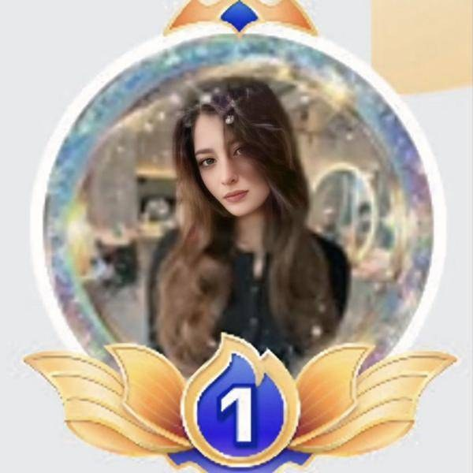
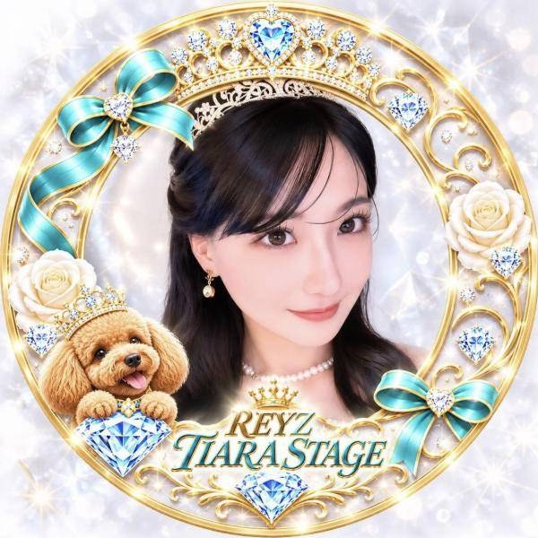

REYZ STUDIO
2026年10月
月に100時間以上配信したライバー 16人。獲得ダイヤモンドの多い順です。
アイコンを押すと、本人のTikTokが開きます。
2026年10月のライバー

けけけーか1,645万ダイヤ配信 158時間TikTokで見る- 💙免疫ない奴ゆう💙1,366万ダイヤ配信 126時間TikTokで見る
- ほの🕊️🔔1,160万ダイヤ配信 315時間TikTokで見る
- 12/3🎂Mizuki 🧡471万ダイヤ配信 153時間
- おもち🐻🥨246万ダイヤ配信 185時間

なお🐩💎238万ダイヤ配信 200時間- べらねぇ👿❤️🔥216万ダイヤ配信 268時間
- MIKU。192万ダイヤ配信 157時間
- とまとちゃん168万ダイヤ配信 128時間
- りンか👸💖135万ダイヤ配信 120時間
- ワキガファンタジー🙋♀️❗️114万ダイヤ配信 144時間
- あい🍚⛳️112万ダイヤ配信 171時間
- Mari🌟🧜🏻♀️水城まり91万ダイヤ配信 111時間
- AO🌈81万ダイヤ配信 107時間
- Nana☺︎🌺🐿️78万ダイヤ配信 128時間
- いくら☃️🧡57万ダイヤ配信 121時間
数字は TikTok LIVE Backstage（事務所向けの公式管理画面）の 2026年10月1日〜31日の記録です。ダイヤモンド数は「万」未満を四捨五入しています。
アカウント名とアイコンは、2026/11/21 時点の本人のTikTokプロフィールです。